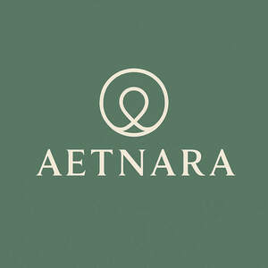

Trade Mark Journal No.2025/034 22 August 2025
UK00004248293 12 August 2025 (3,5,35,41)

- Class 3
- Beauty care cosmetics; Perfumery products; Beauty lotions; Cosmetics all for sale in kit form; Cosmetic products in the form of aerosols for skincare; Beauty creams; Cosmetic products for the shower; Skincare cosmetics; Beauty creams for body care; Body care cosmetics; Beauty care preparations; Beauty tonics for application to the body; Beauty balm creams; Cosmetics in the form of creams; Body creams [cosmetics]; Night creams [cosmetics]; Facial creams [cosmetics]; Cosmetics in the form of lotions; Cosmetic creams and lotions; Moisturisers [cosmetics]; Body and facial creams [cosmetics]; Fluid creams [cosmetics]; Aromatherapy creams; Perfume; Cosmetic massage creams; Beauty serums; After-sun oils [cosmetics]; Cosmetic creams; Cosmetics; Suncare lotions [for cosmetic use]; Scented body lotions and creams; Anti-aging moisturizers used as cosmetics; Tanning oils [cosmetics]; Sunscreen creams [for cosmetic use]; Self tanning creams [cosmetic]; Anti-aging creams [for cosmetic use]; Aftershave creams; Anti-ageing creams [for cosmetic use]; Suntan oils [cosmetics]; Perfume oils; Perfume oils for the manufacture of cosmetic preparations; Anti-wrinkle creams [for cosmetic use]; Beauty soap; Skin fresheners [cosmetics]; Skin recovery creams [cosmetics]; Hair care creams [for cosmetic use]; Sun creams [for cosmetic use]; After-sun milk [cosmetics]; Cosmetics in the form of oils; Skin moisturizers used as cosmetics; Perfumes; Cosmetic hair lotions; Scented body creams; Sun protecting creams [cosmetics]; Cosmetic sun milk lotions; Cosmetic creams for the skin; Cosmetic nourishing creams; Beauty tonics for application to the face; Facial creams [for cosmetic use]; Skin creams [for cosmetic use]; After-sun lotions [for cosmetic use]; Perfumed creams; Self tanning lotions [cosmetic]; Tanning milks [cosmetics]; Beauty serums with anti-ageing properties; Organic cosmetics; Hair care lotions [for cosmetic use]; Perfumery and fragrances; Colour cosmetics; Fragrance refills for non-electric room fragrance dispensers; Aromatherapy lotions; Cosmetic moisturisers; Sun-tanning creams and lotions; Suntan creams [self-tanning creams]; Aftershave lotions; After-shave creams; Cosmetic facial lotions; Body deodorants [perfumery]; After-sun milks [cosmetics]; Natural cosmetics; Skin care creams [cosmetic]; Cosmetic creams for skin care; Cosmetic hand creams; Natural oils for perfumes; Cleansing creams [cosmetic]; Deodorants for personal use [perfumery]; Hair cosmetics; Oils for perfumes and scents; Anti-aging creams; Beauty milk; Room perfumes in spray form; Hydrating creams for cosmetic use; Sun care lotions [for cosmetic use]; Anti-wrinkle cream [for cosmetic use]; Room perfume sprays; Fragrance sachets for eye pillows; Cosmetics for suntanning; Cosmetic products in the form of aerosols for skin care; Moisturising skin lotions [cosmetic]; Beauty gels; Make-up palettes containing cosmetics; Fragrance sachets; Body cream for cosmetic use; Suncare lotions.
- Class 5
- Health food supplements made principally of vitamins; Food supplements; Nutritional supplements for veterinary use; Herbal supplements; Health food supplements made principally of minerals; Food supplements for dietetic use; Food supplements for medical purposes; Anti-oxidant food supplements; Nutritional supplements; Dietary food supplements; Health food supplements for persons with special dietary requirements; Vitamin and mineral food supplements; Vitamin preparations in the nature of food supplements; Dietary supplements with a cosmetic effect; Food supplements for sportsmen; Vitamin supplements; Probiotic supplements; Mineral nutritional supplements; Dietary supplements.
- Class 35
- Online retail store services relating to cosmetic and beauty products; Online retail services relating to cosmetics; Retail services in relation to dietary supplements; Wholesale services in relation to dietary supplements; Mail order retail services for cosmetics; Online ordering services; Online advertising services; Commercial information and advice services for consumers in the field of beauty products; Online marketing; Promotion, advertising and marketing of on-line websites; On-line advertising and marketing services; Online advertisements.
- Class 41
- Provision of online tutorials; Providing online training seminars; Online education services; Providing online electronic publications, not downloadable; Publishing of electronic books and journals on-line; Providing online videos, not downloadable; Provision of online training; Conducting training courses relating to diet online; Conducting training courses relating to nutrition online.
Rui Filipe Matias Cabrita Da Silva Alves